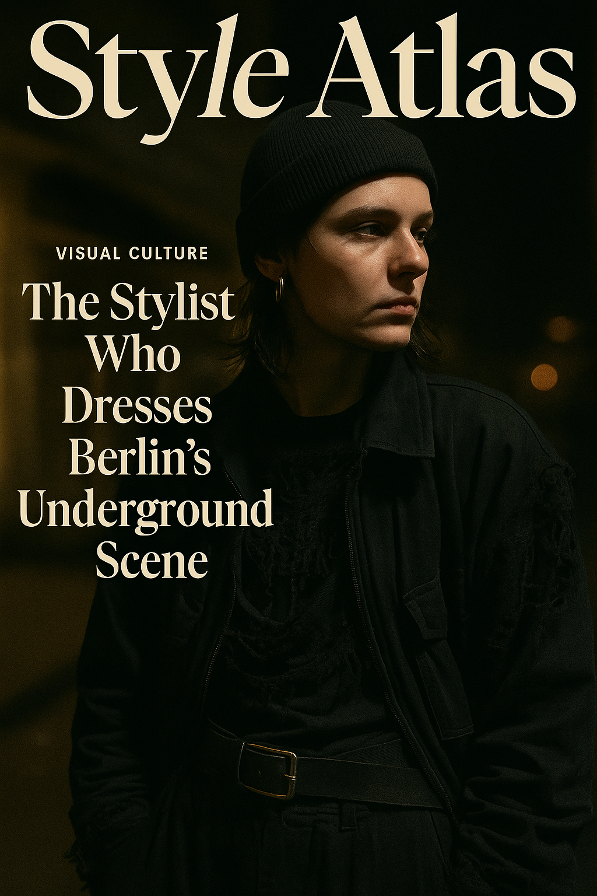

The Stylist Who Dresses Berlin’s Underground Scene
At night, Berlin glows in grayscale. And somewhere between the fog and the basslines, a stylist known only as Niko is building a new visual order.
In the Berlin underground, fashion isn't worn—it's lived. It’s slept in, danced through, left on the floor at sunrise. It doesn't perform for cameras. It communicates in shadows. And in the middle of this aesthetic ecosystem is a stylist who refuses to be seen but is impossible to ignore: Niko Stein.
I met Niko in the back of an unmarked cafe in Kreuzberg. No photos, no last names, and no direct quotes that could be traced. “That’s the point,” they said. “If I wanted people to know me, I’d dress like them.”
“Underground style isn’t subculture—it’s anti-spectacle. It’s dressing for the shadows.” — Niko
Dressing for Disappearance
Niko doesn’t style for magazines. They style for warehouse parties, for drone musicians, for 2 a.m. photographers who use streetlamps as studios. “I’m not interested in what someone looks like,” Niko says, “I’m interested in what their clothes don’t say.”
Their aesthetic is deliberate, layered, and often worn until it falls apart. “Nothing should look new,” they insist. “It should look like a second skin. Like memory.”
The Berlin Uniform
Niko’s signature palette is black on black, but nothing matches. “Matte, cracked, patent, waxed. If it shines, it’s a lie.” Most looks include:
- Oversized mesh tops or deconstructed tanks
- Boots with soles so thick they leave scars on concrete
- Belts as necklaces, industrial clips as closures
- Balaclavas, safety pins, and noise-canceling headphones as accessories
Dressing without trying to be seen. Styling as signal, not selfie.
Styling the Scene, Not the Person
When asked about working with individuals, Niko pauses. “I don’t style people. I style the space they move through.” They build entire looks based on sound, lighting, and what kind of architecture will surround the subject. “A jacket that works in a parking garage collapses in a gallery.”
"We wear clothes. But in Berlin, clothes wear the moment." — Niko
The Rejection of Fashion
Fashion, in the way most of the world consumes it, doesn’t interest Niko. “I don’t work with brands unless they ask me to cut their clothes apart.” Their archive includes utility wear, bootleg pieces, and forgotten garments from military storage. But it’s not aesthetic rebellion—it’s practical poetry.
“You can’t move in a corset unless it’s been broken. I want clothes that have failed before.”
Rave meets ritual. Layered silence with rhythmic attitude.
The Faces They Dress
Niko works with DJs, digital artists, performers, and sometimes people they meet by accident. “There’s no fitting. Just vibe.” The only rule? No mirrors. “I style by sound, by scent, by posture. Mirrors kill the process.”
Why No One Knows Niko
“The more known I become, the less underground they remain,” Niko says, referring to the artists they dress. They have no Instagram. Clients find them through encrypted links or word-of-mouth. Photos of Niko are rare. Even the name might not be real.
When Style Becomes Ritual
In Berlin’s fogged-out corners, styling isn’t about presentation. It’s preparation. Ritual. Camouflage. Niko talks about clothing like it's performance prep for a night that might never end. “Everything you wear should feel like you already lived through the night. And survived it.”
Clothing like relics. Every layer, a confession.
What’s Next?
Niko is vague. “There’s a show coming, but you won’t see it. You’ll feel it.” They mention a one-night installation, invite-only, where each guest is styled based on what music they play when alone. No phones. No mirrors. No light above the shoulders.
When I ask if Style Atlas can be there, Niko only smiles. “Only if you forget your name.”
Words by Style Atlas